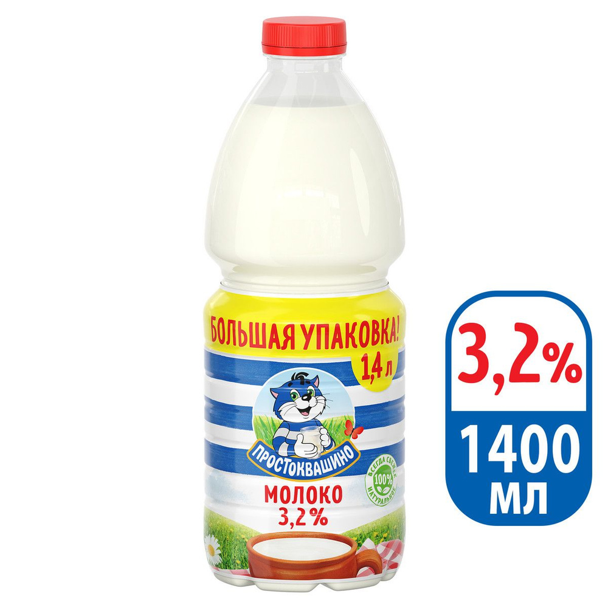
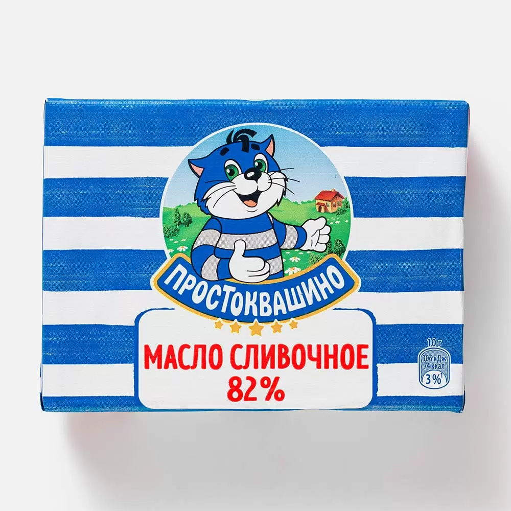
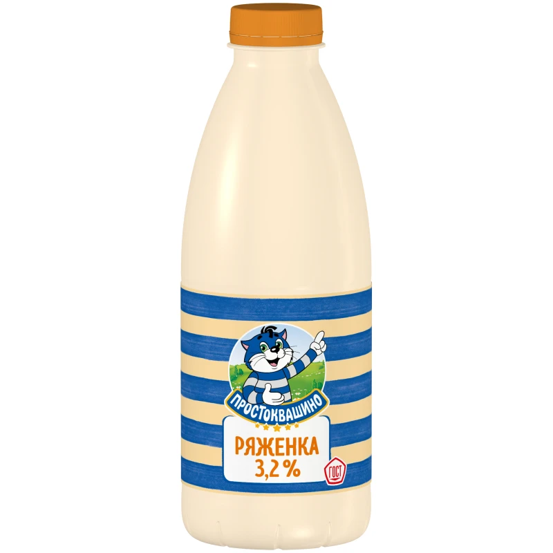
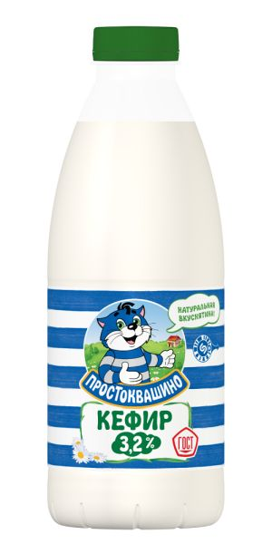
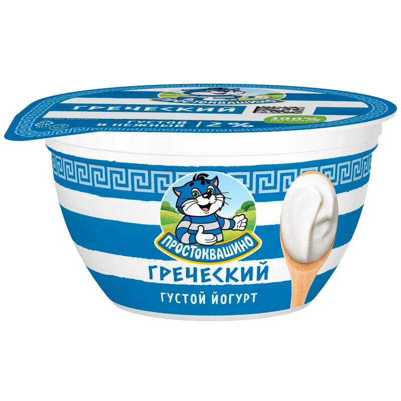
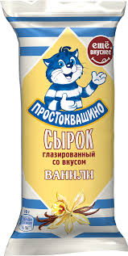
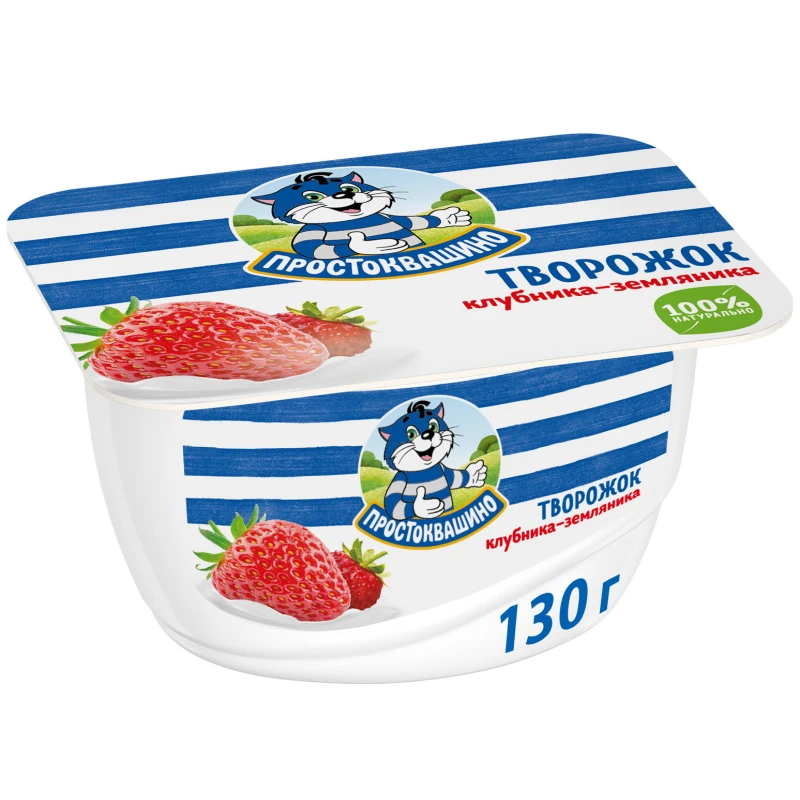

Молоко 3,2%
120 руб
Молоко Простоквашино Отборное пастеризованное жирностью 3,2% сохранило первозданный натуральный вкус. Продукт не содержит искусственных красителей, консервантов и ароматизаторов. Вы не найдете отличия между молоком, которое пьете в деревне у бабушки и изделием компании Простоквашино.

Сметана 25%
108 руб
Сметана Простоквашино 25%, 300 г готовится по традиционному русскому рецепту. В ее состав входят натуральные сливки и закваска полезных кисломолочных культур, что придает сметане очень богатый вкус, нежную консистенцию, а также свежий аромат. Благодаря небольшой жирности продукт прекрасно усваивается.

Творог 5%
152 руб
Творог Простоквашино 5% 200г приготовлен по особой технологии из пастеризованного молока и закваски молочнокислых культур. После свертывания из творога отделяется сыворотка, продукт помещается под пресс и затем охлаждается. Структура получается плотная, суховатая, с минимальной кислинкой.

Масло сливочное 82%
280 руб
Масло сливочное Простоквашино 82% жирности – это натуральный продукт, приготовленный из свежих пастеризованных сливок высшего качества. Высокие требования к используемому для производства сырью позволяют поставлять на Ващ стол продукцию с наилучшими вкусовыми свойствами

Ряженка 3,2%
200 руб
Ряженка простоквашино-У нее приятный кремовый цвет и тонкий карамельный аромат. Изготовленная из 100% натуральных ингредиентов, эта ряженка отличается неизменно приятным вкусом. Кроме того, она проходит строгий контроль на антибиотики, а также не содержит консервантов, сухого молока и растительных жиров.

Снежок 2,5%
180 руб
Снежок простоквашино-
Высокое содержание молочнокислых микроорганизмов. Не содержит крахмала и каррагинана, мальтодекстрина. Консерванты не выявлены. Существенные замечания по органолептическим показателям: консистенция слегка тягучая, вкус и запах с легким привкусом «злаковых», с легкой мучнистостью

Кефир 3,2%
110 руб
Кефир Простоквашино приготовлен из качественного, пятизвёздочного молока и "живой" закваски на кефирных грибках, о которых тщательно заботятся и отбирают вручную. Благодаря этому кефир Простоквашино такой густой и вкусный. Можно быть уверенным: в "Простоквашино" - кефир правильно заквашен!

Йогурт греческий 2%
78 руб
Йогурт греческий Простоквашино-Пищевая ценность в 100г: Белки: 3.60 Жиры: 2.90 Углеводы: 11.80 Калорийность: 88. Состав: нормализованное молоко, наполнитель (вода, клубника, сахар, кукурузный крахмал, сок лимона, сок черной моркови, семена клубники, загуститель – пектины, натуральный ароматизатор, краситель – кармины), сахар, закваска.

Сырок глазированный
52 руб
Сырок – прямоугольной формы с закругленными краями, поверхность равномерно покрыта глазурью. Поверхность глазури – гладкая, матовая, с единичными мелкими каплями влаги. Глазурь темно-коричневого цвета; творожная масса белая, с желтоватым оттенком.

Творожок клубничный
69 руб
Клубничный творожок Простоквашино с вишней и черешней – это прекрасное сочетание творога, сливок и сочных ягод! В составе только 100% натуральные ингредиенты. Творожок обладает идеальной мягкой текстурой, густотой и нежным сливочным вкусом. Выбери свой вкус идеального завтрака для всей семьи!